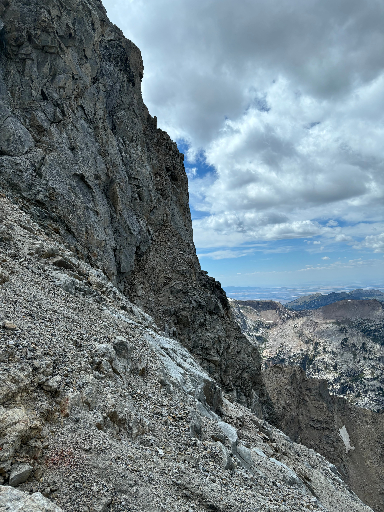

Cathedral Traverse, Valhalla var solo.
8/11/2025

This probably will be my last big day in the Tetons for a little while. I have a lot of reasons, but the biggest one is that despite all of research, effort, and stress that the traverse required, by the end, I didn’t marvel at where I’d just been. I didn’t expect much emotional resonance. I just wanted to leave. The mountains were losing their pull.
Still, the mental and physical requirements are benchmarks I have aimed at for four summers in the Tetons. If the Cathedral Traverse is a stopping point, it is a very proud one.
The first phase felt mostly like going through the motions, with Teewinot E face as the necessary and familiar beginning. I’d never climbed it at night, so the route-finding was imperfect, but I managed to top out at an acceptable two and half hours after starting. I was carrying a rope and a few pieces of gear, and a whole glass container of syrup, so I was worried about pace. (typical of big mileage days, I wound up carrying twice the amount of food I ate)
The following section of the traverse – the broad bench to peak 11,840, the little sub-spike and then scramble up to East Prong – was a lot of fun. After starting the series on the way up the Apex, I was now listening to episodes 3 and 4 of the Rest Is History’s Custer series. They had transitioned to discussing Crazy Horse and Sitting Bull. I like listening to podcasts to steady myself when moving through tricky terrain, although I found there wasn’t too much scary stuff in this section. I also mixed in Hamilton when I wanted more energy.
Usually the descent from 11,840 is done via several rappels, but to preserve speed I opted for the loose 5.6 chimney on the northwest side. The chimney was definitely more comfortable than the following dirty loose stretch! The northern exposure into Cascade Canyon was fortunately dulled by the large bowl between Teewinot and Owen. A bit of excessively difficult scrambling on clean granite slabs then led me to a minor knob east of East Prong, and after to East Prong itself. The alpenglow on the N Face of the Grand was as stunning as I’ve seen.
East Prong again is normally descended via one or two raps on its west side, which drops off steeply toward Koven col. Fortunately, it was late enough in the year that the sharp down climb on East Prong’s northwest ridge was snow-free, allowing a steep but secure scramble to the col on dry rock. The snowfields around the col freaked me out last time I was on Owen, and I was happy not to have to test them in runners. Especially since they’d more or less feel like ice at that point.
Owen felt phenomenally easier than it had the first time I was up there. I'd chalk that up to the reduction in snow, knowing where the correct summit chimney was, a greater comfort on alpine terrain, and the all-important having been there before. The first chimney to access the summit field was no longer mixed and instead a waterfall, which me and everyone else I saw used for a water refill. I had to cross the summit shelf snowfield once, maybe for 15 feet, near its southeastern edge. I conveniently ran into some other climbers right before trying to figure for myself where the correct summit chimney was, and they gave me excellent directions. Turns out the west side of Owen is a broad place! Wish I knew that a year ago. I touched the summit at 9:15.
According to most internet reports, the following traverse down into and out of the Gunsight Notch is the crux of the whole traverse. Using Rolando Garibotti’s beta helped me reach the notch in 45 minutes from Owen, and without any wrong turns. The final stretch to actually get to the bottom of the notch did come down to a rotten, reachy 5.6 down climb I did not enjoy (though I realized halfway down there is a much simpler line I missed). It is an annoying place to manage gear and rope, but I would consider rapping on a second pass, especially since you need the rope out anyways if you are taking the Grand N ridge.
I paused at the bottom of the notch to contemplate where I was. I've been obsessed with the Gunsight for years. It felt outrageous to actually be there. The view down toward Teton Glacier was surreal.
Sixty ish feet of low fifth sticks you at the bottom of the marquee pitch of the traverse, which then brings you to the Grandstand. I did not know this at the time but this is apparently the climbing crux of the entire traditional Cathedral traverse. It consists of right-leaning, knobby, shallow seams of the classic ‘golden, Teton rock’ at a high angle. I suppose a fair grade might be 5.7+. I would compare it to a steeper version of the Teewinot crux. I’d never soloed at this sustained difficulty.
There is a nice belay ledge below the pitch where I changed into climbing shoes. The first fifteen feet felt fine, but as the jugs ran out and precision climbing began my heart rate started spiking. I found a tiny ledge thirty feet up where I nearly spiraled out mentally. If I had stopped there for any longer I might have totally broken down — in any case, it was a precarious enough position that I couldn’t comfortably stay. So I forced myself to stop thinking and made several quick, steep moves, which landed me in a small alcove nearly at the end of the pitch. Here I was able to rack my pack on the wall and put my harness on with a few pieces of gear handy, so that if I got in trouble again I could plug something and actually have the ability to bail. But the final couple moves (through a small roof! I think I was off route to the right slightly) were very secure. I took a break on the Grandstand shelves to calm down afterwards.
Reaching the top of the Grandstand was rotten but not difficult. The N Ridge did not look very intimidating, but after the Gunsight pitch I wasn’t keen to get on properly steep rock again. This was probably a mistake.
The descent off the Grandstand to access the Valhalla traverse was the most miserable alpine experience I have had. Everything was terribly loose, very steep, and constantly cliffing out to the north and west. I also was cutting my own route down using old pictures from work I had of the west side of the Grand. I think I found a decent route, but the awful instability of the terrain meant getting down to the beginning of Valhalla took three hours. I also needed the rope to bypass via rappel a short step near the terminus of the Black Ice Couloir. And I was nearly hit by some rockfall! The north face of the Grand was dropping rocks all day, and the Visionquest Couloir is notorious for constantly firing debris into the canyon. Starting up the Valhalla traverse was a relief, even in spite of its general reputation as a totally horrid stretch in its own right.
The crux of the traverse is supposed to be this dirty, slanted 4th class ramp-chimney that threatens to dump you off a cliff on its open west side. I imagine descending this chimney feels much less secure than ascending, since getting up through the chimney felt substantially safer than everything coming off the Grandstand. After this chimney is the strange, yellow cement-filled bowl that the guidebook describes. It is indeed strange and indeed contains a weird type of wet slurry in its center. I quickly learned not to trust the slurry after attempting a direct traverse across the bowl, which like the previous chimney ends in a sharp drop off into Valhalla Canyon. Instead, I skirted the bowl on its upper side, necessitating an extremely loose but short down climb to reach the bowl’s southern exit. Prospective holds broke at least three times. So much fun.
The traverse from here thankfully was straightforward. A quick crossover of a much wider and more solid bowl put me within eyesight of the Lower Saddle, which only required another trivial bit of hiking. It was past 5 pm.
I took my biggest break of the day at the Lower Saddle, since by then I clearly was not going to tag anything past the Grand. I was also able to leave everything besides one box of Mike and Ikes at the hangers by the Exum camp, which helped me get up and down the Owen-Spalding fairly quickly. On the way up to the Needle, an Exum guide told me to be careful about going up that late. By that point I was listening to music again so maybe the headphones threw him off. I told him I was having a weird day. I topped out the Grand at 7 pm with two other parties. The clouds looked threatening so I didn’t linger.
On the descent, right before the Belly Roll, I paused for the view. Most of the range was glowing with pre-sunset lighting. A lot of the mental and physical stress came off all at once. I leaned back against the ledge and cried for a few minutes. I was thankful to be there, thankful to be done, thankful for a lot of the other life things mountains help you remember. I stopped worrying about speed. It was the only time during the traverse, and one of the only times the whole summer, that the Tetons truly overwhelmed me with beauty. I wondered then if that meant I should be somewhere else next year.
I could only manage getting back to the saddle by 8:30, a good indicator of how exhausted I was. I anticipated a brutal descent back to the lupine lot. Compared to several previous return trips it wasn’t too bad. I got back to the car around midnight, stretched, and tried not to fall asleep on the drive back to the cabin.